물류관리사-1교시 (2012-08-05 기출문제)
1과목: 물류관리론
1. 물류산업을 둘러싼 환경의 변화에 관한 내용으로 옳지 않은 것은?
- 소비자 욕구와 상품구입 방법의 다양화
- 제조업체에서 유통업체로의 채널파워 이동
- 글로벌 경제활동에 따른 공급사슬의 복잡화
- 다빈도 소량주문과 소품종 대량생산의 확대
- 물류비 절감과 매출증대의 중요성 증가
(정답률: 알수없음)

2. 다음은 물류의 기본적 기능을 설명한 것이다. 각각의 설명에 해당하는 물류의 기능이 바르게 연결된 것은?
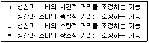
- ㄱ: 보관, ㄴ: 집하ㆍ배송, ㄷ: 가공ㆍ조립ㆍ포장, ㄹ: 수송
- ㄱ: 가공ㆍ조립ㆍ포장, ㄴ: 수송, ㄷ: 집하ㆍ배송, ㄹ: 보관
- ㄱ: 보관, ㄴ: 가공ㆍ조립ㆍ포장, ㄷ: 집하ㆍ배송, ㄹ: 수송
- ㄱ: 보관, ㄴ: 가공ㆍ조립ㆍ포장, ㄷ: 수송, ㄹ: 집하ㆍ배송
- ㄱ: 집하ㆍ배송, ㄴ: 보관, ㄷ: 가공ㆍ조립ㆍ포장, ㄹ: 수송
(정답률: 59%)
3. 단위 주문원가는 100원, 연간 수요는 10,000단위, 연간 재고유지비용은 20%, 재고 한 단위의 가치는 200원이라고 할 때, 경제적주문량모형(EOQ: Economic Order Quantity model)을 이용한 경제적주문량에 가장 가까운 것은?
- 210
- 224
- 264
- 320
- 360
(정답률: 알수없음)
4. 다음은 물류활동의 영역에 관한 설명이다. 조달, 생산, 판매, 반품, 회수활동의 순으로 바르게 나열한 것은?
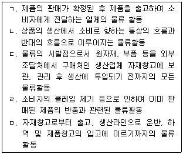
- ㄱ-ㄷ-ㄴ-ㄹ-ㅁ
- ㄷ-ㅁ-ㄱ-ㄴ-ㄹ
- ㄷ-ㅁ-ㄱ-ㄹ-ㄴ
- ㅁ-ㄱ-ㄴ-ㄷ-ㄹ
- ㅁ-ㄱ-ㄹ-ㄴ-ㄷ
(정답률: 84%)
5. 물류시스템에 관한 설명으로 옳지 않은 것은?
- 공급사슬(supply chain)이 길어지면, 다양한 제약요인이 발생할 가능성이 높아진다.
- 물류는 생산지점에서 소비지점으로 재화를 이동시키기 위해 필요한 활동들을 체계적으로 관리하는 것이다.
- 물류는 가격조건, 적절한 시간과 장소에서 재화의 가용성을 증대시켜 고객의 만족도를 충족시키는 활동이다.
- 고객서비스는 물류시스템의 중요한 산출물 중의 하나이다.
- 물류시스템에서 JIT(Just in Time)는 모든 물류활동에 정(+)의 효과를 가지는 혁신적인 방법이다.
(정답률: 75%)
6. 지구 환경의 변화에 따른 친환경적 물류시스템에 관한 설명으로 옳은 것은?
- 교토의정서, 몬트리올의정서 등은 온실가스 배출로 인한 지구온난화를 방지하기 위해 추진되었다.
- 다품종 소량 제품의 적시 공급을 위한 소형차량 다빈도 운송으로 인해 환경공해가 줄어들고 있다.
- 제조단계에서 폐기에 이르는 전과정에 대한 책임이 부과되고 있는 생산자책임 재활용제도(extended producer responsibility)는 물류와 관련성이 없다.
- 친환경적 물류시스템은 물자공급활동의 전과정에서 발생하는 물류비용을 감소시키기 위하여 계획ㆍ실시ㆍ통제하는 것이다.
- CO2 배출량은 운송부분에만 해당하는 것으로 연료법, 연비법, 개량 톤-킬로법 등으로 수치화되고 있다.
(정답률: 알수없음)
7. 물류관리의 효율화를 추구하는 수단인 통합물류관리에 관한 설명으로 옳지 않은 것은?
- 원자재의 조달에서 상품판매 이후의 단계까지 각 기능의 상관관계를 고려하여 물류기능의 통합적 관점에서 물류관리를 수행한다.
- 물류관리의 수행에서 기업간 경쟁을 회피하고, 협력관계로 공동 노력한다는 인식을 갖고 전략적 제휴를 추진한다.
- 물류관리의 효율화를 추구하기 위하여 거시적 관점으로 기업간, 산업간 물류의 표준화, 공동화, 통합화를 추구한다.
- 물류관리의 효율화 목적이 물류비 절감을 통한 수익향상에 있으므로 사내 표준화에 중점을 둔 물류경로의 구축, 리드타임의 단축 등을 추진한다.
- 물류관리를 효율화하기 위한 수단으로 각 물류 활동분야의 관리지표를 설정하되 종합적인 효과를 고려하면서 지속적으로 점검, 관리한다.
(정답률: 60%)
8. 다음은 어떤 회사의 월별 텔레비전 판매량을 나타낸 것이다. 4월의 텔레비전 판매량은 44만대였다. 이동평균법, 가중이동평균법, 지수평활법을 이용하여 4월의 수요를 예측한 (ㄱ), (ㄴ), (ㄷ)의 적절한 값은? (단, 계산한 값은 반올림하여 천단위까지 구하시오.)
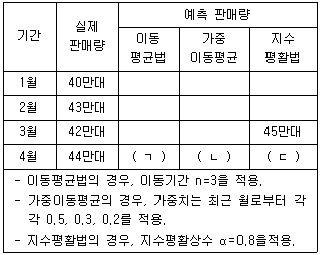
- (ㄱ) 41.7만대, (ㄴ) 41.9만대, (ㄷ) 42.6만대
- (ㄱ) 41.7만대, (ㄴ) 41.9만대, (ㄷ) 44.4만대
- (ㄱ) 43.0만대, (ㄴ) 41.9만대, (ㄷ) 44.2만대
- (ㄱ) 43.0만대, (ㄴ) 43.2만대, (ㄷ) 42.6만대
- (ㄱ) 43.0만대, (ㄴ) 43.2만대, (ㄷ) 44.2만대
(정답률: 37%)
9. 수요예측기법에 관한 설명으로 옳은 것은?
- 시장조사법과 지수평활법은 정량적 기법이다.
- 시장조사법과 지수평활법은 중장기적인 예측에 주로 사용하는 기법이다.
- 패널동의법은 한 질문서에 대한 응답을 기초로 전문가의 의견을 반복적으로 반영하여 예측하는 기법이다.
- 역사적 유추법, 회귀분석법, 선도지표법 등은 다양한 변수들을 찾아내고 그들 사이의 인과 관계를 예측하는 모형이다.
- 시계열 분석기법은 일정한 시간, 간격에 나타나는 관측치를 가지고 분석하는 방법으로 추세, 계절적 변동, 순환요인 등으로 구성된다.
(정답률: 알수없음)
10. 채찍효과(bullwhip effect)를 해결하기 위한 방안으로 옳지 않은 것은?
- 수요에 관한 정보를 중앙으로 집중시킴으로써 공급사슬 전체의 불확실성을 줄인다.
- EDLP(Everyday Low Price) 전략을 통해 가격의 변동폭을 줄임으로써 수요의 변동을 감소시킨다.
- 일괄주문처리(order batching)를 지향한다.
- 공급사슬 내 정보의 공유를 위해 많은 전략적 파트너십에 참여한다.
- EDI(Electronic Data Interchange)를 이용하여 정보리드타임을 감소시킨다.
(정답률: 82%)
11. 그림의 (ㄱ)~(ㅁ)은 제품수명주기(product life cycle)를 단계별로 구분한 것이다. 각 단계의 명칭과 특징을 설명한 것으로 옳지 않은 것은?
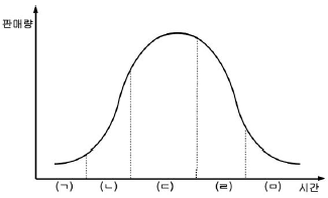
- (ㄱ) 도입기 : 일반적으로 수요는 매우 불확실하고 공급도 불확실하며, 이익은 낮거나 손실이 발생하는 단계이다.
- (ㄴ) 성장기 : 매출이 증가되고 일부 업체의 쇠퇴 및 시장 재편의 징후가 나타나며, 가장 높은 수익을 얻을 수 있는 단계이다.
- (ㄷ) 성숙기 : 제품이 일반화되고 수요 증대에 맞추어 가격은 하향 조정되기 시작하며, 수익은 평준화되다가 감소하기 시작하는 단계이다.
- (ㄹ) 쇠퇴기 : 가격이 평준화되고 판매량은 감소하며, 이에 따라 이익도 감소하기 시작하는 단계이다.
- (ㅁ) 소멸기 : 재고부족으로 인하여 가격상승현상이 일부 나타날 수도 있으나, 이익은 감소하고 손실이 발생하는 단계이다.
(정답률: 80%)
12. 활동기준원가계산(ABC: Activity Based Costing)기법의 구성 요소에 포함되지 않는 것은?
- 활동(Activity)
- 자원(Resource)
- 원가동인(Cost Driver)
- 활동동인(Activity Driver)
- 자원동인(Resource Driver)
(정답률: 알수없음)
13. 물류원가 계산과 물류채산 분석을 비교한 것으로 옳지 않은 것은?
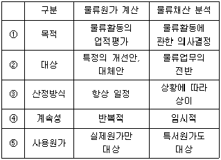
- ①
- ②
- ③
- ④
- ⑤
(정답률: 58%)
14. A기업이 60억원을 투자하여 물류센터를 건설하였다. 물류센터의 내용연수는 30년이며, 감가상각은 정액상각방식으로 한다. 물류센터 건설 후 10년이 경과한 시점의 물류센터에 대한 연간 시설부담이자는 얼마인가? (단, 시중 연 이자율은 4%를 적용하고, 투자비용의 시간가치와 잔존가치는 고려하지 않는다.)
- 1억 1,000만원
- 1억 2,000만원
- 1억 5,000만원
- 1억 6,000만원
- 1억 8,000만원
(정답률: 알수없음)
15. 2008년 7월, 국토해양부는 기업 물류비의 산정방법을 개정하였는데, 그 분류체계에 해당되지 않는 것은?
- 기능별 물류비
- 거점별 물류비
- 영역별 물류비
- 조업도별 물류비
- 지급형태별 물류비
(정답률: 70%)
16. 물류비 계산의 일반기준인 관리회계방식의 특징으로 옳지 않은 것은?
- 물류활동에 투입되는 인력, 자금, 시설 등의 계획 및 통제에 유용한 회계정보의 작성
- 물류비 계산이 필요한 시기, 장소에 따라 가능
- 물류비 절감효과의 측정이 어려움
- 물류활동의 개선안과 개선항목의 명확한 파악이 가능
- 상세한 물류비 분류 및 계산을 위한 사무절차와 작업량이 복잡하고 많음
(정답률: 알수없음)
17. 물류활동은 수송, 보관, 하역, 포장, 유통가공, 정보 등의 기능으로 구성된다. 이러한 물류활동의 기능에 관한 설명으로 옳지 않은 것은?
- 수송활동은 운송수단에 의하여 재화를 효용가치가 높은 곳에서 낮은 곳으로 이동시키는 물리적 행위를 말한다.
- 보관활동은 생산한 제품을 보관함으로써 안정적인 생산과 판매의 조정 및 완충역할을 수행한다.
- 하역활동은 수송과 보관의 양단에서 물품을 처리하는 행위로 수송과 보관의 보조역할을 한다.
- 유통가공활동의 목적은 판매촉진, 생산효율지원 및 물류합리화에 있다.
- 물류의 기능적 활동 간에는 상충(trade-off)관계도 있기 때문에 기능들 간의 조화를 통한 시스템 통합화가 필요하다.
(정답률: 알수없음)
18. 주문처리시스템(order processing system)의 자동화로 얻을 수 있는 이점이 아닌 것은?
- 인력절감
- 초기 원가의 감소
- 주문사이클시간의 감소
- 안전재고 보유분의 감소
- 주문처리과정의 신속한 대고객통지서비스 향상
(정답률: 80%)
19. 주문처리시간에 영향을 미치는 요소가 아닌 것은?
- 혼적
- 경제적주문량
- 주문 일괄처리
- 주문처리 우선순위
- 오더필링(order filling)의 정확성
(정답률: 59%)
20. GPS(Global Positioning System)에 관한 설명 중 옳지 않은 것은?
- 인공위성과 통신망을 이용한 위치측정시스템을 의미한다.
- 미국 정부가 군사용으로 개발한 항법지원시스템이다.
- 물류정보시스템에 응용함으로써 화물추적서비스 제공이 용이해 진다.
- 운행하는 운송수단의 관리와 통제에 용이하게 활용될 수 있다.
- GPS 수신기의 부착 없이 모든 수송수단의 위치를 파악할 수 있다.
(정답률: 알수없음)
21. 물류포장에 관한 설명으로 옳은 것은?
- 포장은 수송, 보관, 하역, 정보 등의 각 물류활동 요소와 상호 유기적으로 연계시키는 활동이다.
- 공업포장은 상품의 품질과 가치 보호가 최우선이며, 소비자와 직접 접촉한다.
- 포장의 기능 중 정량성의 기초는 규격화 또는 단위화를 말하며, 소비자의 구입량과 상관없이 단위화하는 것이다.
- 물류분야에 있어 포장은 상업포장이 중심이 되어야하며, 보관ㆍ하역ㆍ이동이 용이한 상태의 포장이 요구된다.
- 공업포장은 최대의 비용으로 좋은 상태의 품질을 유지하며 상품을 운반하기 위한 수단이다.
(정답률: 77%)
22. 최저비용으로 창고의 공간, 작업자, 하역설비 등을 유효하게 활용하여 서비스수준을 제고시키는데 목적이 있으며, 입출고정보, 재고관리, 재고 이동정보 등을 포함하는 시스템은?
- 정보통제시스템
- 주문관리시스템
- 창고관리시스템
- 수배송관리시스템
- 수주출하처리시스템
(정답률: 알수없음)
23. 일반화물의 취급표시를 나타낸 화인 (ㄱ)과 (ㄴ)의 명칭을 올바르게 나열한 것은?
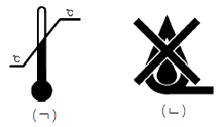
- ㄱ: 온도제한, ㄴ: 젖음방지
- ㄱ: 화기엄금, ㄴ: 직사광선, 열차폐
- ㄱ: 온도제한, ㄴ: 화기엄금
- ㄱ: 온도제한, ㄴ: 직사광선, 열차폐
- ㄱ: 직사광선, 열차폐, ㄴ: 젖음방지
(정답률: 82%)
24. 물류표준화에 관한 설명으로 옳지 않은 것은?
- 유닛로드시스템(ULS: Unit Load System)에 있어서 표준화 대상에는 일관수송용 파렛트, 컨테이너, 트럭 등이 있다.
- 물류표준화는 물류체계의 효율화에 필요한 사항을 물류표준으로 통일하고 단순화하는 것을 말한다.
- 물류표준화의 목적은 물류활동의 효율성 제고와 일관성 및 경제성의 확보로 물류비를 절감하는데 있다.
- 치수기준의 표준화는 하드웨어와 소프트웨어 부문으로 양분되어 있으므로 그 표준화는 각기 독립적으로 이루어지는 것이 보다 효율적이다.
- 효율적인 물류표준화를 위해서는 개별기업 단위의 표준화 이전에 국가단위의 표준화가 선행될 필요가 있다.
(정답률: 알수없음)
25. 고객서비스 요소를 거래시점을 기준으로 바르게 구분한 것은?
- 결품률 - 거래 전 요인
- 주문의 편리성 - 거래 전 요인
- 주문주기의 요소들 - 거래시 요인
- 설치 - 거래시 요인
- 제품 대체 - 거래 후 요인
(정답률: 30%)
26. 광속상거래(CALS: Commerce At Light Speed)의 구성요소로 가장 거리가 먼 것은?
- 조달 - EDI(Electronic Data Interchange)
- 생산 - POS(Point of Sales)
- 설계 - 동시공학(Concurrent Engineering)
- 제조 - 품질공학(Quality Engineering)
- 운용 - 물류(Logistics)
(정답률: 알수없음)
27. ISO 표준규격 해상용 20 ft 컨테이너에 KST2024로 제정되어 있는 규격 T11 파렛트를 1단 적재할 경우, 최대적재가능 파렛트 매수는?
- 4
- 6
- 8
- 10
- 12
(정답률: 알수없음)
28. 물류보안에 대한 아래의 제도를 시행한 국가와 제도의 명칭이 올바르게 연결된 것은?
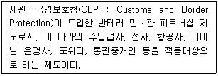
- 일본, CSI(Container Security Initiative)
- 영국, AEO(Authorized Economic Operator)
- 한국, CIP(Container Inspection Program)
- EU, ISPS code(International Ship and Port Security code)
- 미국, C-TPAT(Customs-Trade Partnership Against Terrorism)
(정답률: 73%)
29. 물류합리화를 위한 6시그마(Sigma)의 프로세스에 포함되지 않는 것은?
- 측정(Measure) : 현재 불량수준을 측정하여 수치화하는 단계
- 분석(Analyze) : 불량의 발생원인을 파악하고 개선대상을 선정하는 단계
- 개선(Improve) : 개선과제를 선정하고 실제 개선작업을 수행하는 단계
- 평가(Evaluate) : 개선작업의 시행결과를 평가하는 단계
- 관리(Control) : 개선결과를 유지하고 새로운 목표를 설정하는 단계
(정답률: 알수없음)
30. 물류합리화 목표를 달성하는 방법에 관한 설명으로 옳은 것은?
- 다양한 고객의 욕구를 충족시키기 위하여 고객서비스는 어떠한 경우라도 경쟁사보다 높은 수준을 유지하는 것이 합리적이다.
- 고객서비스 수준의 향상은 비용을 수반하기 때문에 고객의 유형에 따라 서비스 수준을 조정할 필요가 있다.
- 고객서비스 수준의 향상과 함께 물류비용을 줄이기 위해서는 독자적인 물류시스템을 운영하여야 한다.
- 고객서비스는 고객을 위한 유상(有償) 서비스이므로 많은 비용을 들여서라도 제공할 필요가 있다.
- 고객집단의 다양성으로 인한 혼란을 방지하기 위해 서비스 수준은 항상 일정하게 유지하는 것이 필요하다.
(정답률: 55%)
31. 포장의 합리화 방안 중 옳지 않은 것은?
- 다중 포장
- 포장재료의 개선
- 포장화물의 단위화
- 포장 표준화 및 모듈화
- 유닛로드시스템(ULS) 추진
(정답률: 93%)
32. 다음 중 역물류(reverse logistics)의 대상이 아닌 것은?
- 수명종료로 폐기되는 상품
- 계약기간 종료 후 반품되는 상품
- 제품의 이상으로 리콜대상인 상품
- 상품에 문제는 없으나 고객이 교환한 상품
- 센터에서 다른 센터로 이송되는 정상상품
(정답률: 90%)
33. 다음 지문이 설명하는 것은 무엇인가?
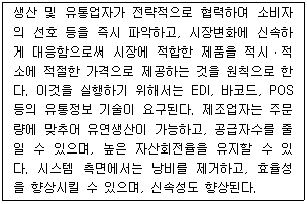
- QR(Quick Response)
- CPFR(Collaborative Planning Forecasting and Replenishment)
- VMI(Vendor Managed Inventory)
- CRP(Continuous Replenishment Programs)
- ABC(Activity Based Costing)
(정답률: 60%)
34. 고객이 요구하는 수준의 서비스 제공이라는 물류의 목적 달성을 위한 7R의 원칙에 해당되지 않는 것은?
- Right time
- Right place
- Right impression
- Right promotion
- Right quantity
(정답률: 50%)
35. 유통경로상에 존재하는 중간상의 역할에 관한 설명으로 옳지 않은 것은?
- 중간상의 존재로 인해 생산자는 다수의 소비자와의 거래를 단순화시킬 수 있다.
- 중간상은 생산자와 소비자간의 욕구 차이에서 발생하는 제품구색 및 구매량의 불일치를 조절한다.
- 중간상은 생산자에 비해 더 많은 소비자들의 욕구를 파악할 수 있으며 소비자에게 한 장소에서 다양한 제품에 대한 정보를 제공해 준다.
- 중간상은 생산자를 대신하여 소비자에게 판매 후 서비스를 제공하기도 한다.
- 중간상이 생산자와 소비자 사이에 개입함에 따라 생산자의 재고부담이 증가한다.
(정답률: 69%)
36. 온실가스의 저감정책을 위한 물류관리활동과 관련이 없는 것은?
- 영업용차량의 비영업용차량으로 전환
- 물류공동화 확대
- 물류거점의 집약화를 통한 대형화
- 배출권 거래제도 도입
- 특별대책지역의 통행접근금지
(정답률: 알수없음)
37. 거점의 수와 비용의 관계를 나타낸 것이다. (ㄱ)~(ㄷ)에 들어갈 명칭이 바르게 연결된 것은?
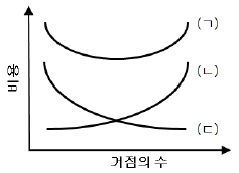
- ㄱ: 총비용, ㄴ: 수송비용, ㄷ: 재고비용
- ㄱ: 총비용, ㄴ: 재고비용, ㄷ: 수송비용
- ㄱ: 총비용, ㄴ: 재고비용, ㄷ: 창고비용
- ㄱ: 재고비용, ㄴ: 총비용, ㄷ: 창고비용
- ㄱ: 수송비용, ㄴ: 총비용, ㄷ: 재고비용
(정답률: 알수없음)
38. 유통경로의 조직형태 중 수직적 유통경로시스템에 대한 설명으로 옳지 않은 것은?
- 생산에서 소비에 이르기까지 유통과정의 흐름을 체계적으로 통합ㆍ조정하여 규모의 경제를 실현할 수 있도록 설계된 유통경로의 형태다.
- 수직적 유통경로시스템을 도입하는 이유는 유통비용의 절감과 날로 심화되는 업태간의 경쟁에 효과적으로 대응하기 위해서다.
- 대량생산으로 인한 대량판매를 위해 도ㆍ소매상을 자사의 판매망으로 구축하는 것이 목적이다.
- 자원 및 원재료 등의 안정적 확보가 가능한 점이 특징이다.
- 중앙 집중화된 파워에 의해 경로구성원들을 조정ㆍ통제하고 경로를 관리함에 따라 시장ㆍ기술변화 등의 유통환경 변화에 민감한 대응이 가능하다.
(정답률: 43%)
39. 다음 중 물류표준화의 대상으로 보기에 가장 거리가 먼 것은?
- 생산방식의 표준화
- 물류정보의 표준화
- 포장치수의 표준화
- 거래단위의 표준화
- 물류용어의 표준화
(정답률: 80%)
40. 수송 리드타임이 3주이고 1회 발주량이 70개일 때, (ㄱ)~(ㄷ)에 적절한 값은? (단, 안전재고는 60개이다.)
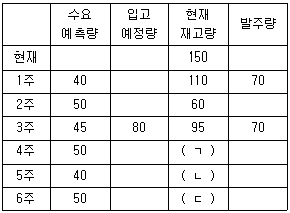
- ㄱ: 45, ㄴ: 75, ㄷ: 95
- ㄱ: 45, ㄴ: 85, ㄷ: 135
- ㄱ: 1⑤, ㄴ: 65, ㄷ: 125
- ㄱ: 115, ㄴ: 75, ㄷ: 95
- ㄱ: 115, ㄴ: 135, ㄷ: 85
(정답률: 47%)
2과목: 화물수송론
41. 화물운송에 관한 설명으로 옳지 않은 것은?
- 재화의 물리적 이동행위로 생산과 소비의 공간적 거리를 극복한다.
- 우리나라의 경우 화물운송비는 전체 물류비 중 가장 높은 비중을 차지하고 있다.
- 항공화물운송은 경량, 고가화물의 장거리 운송에 적합하다.
- 우리나라 화물자동차운송사업은 신고제이다.
- 운송수단, 운송경로, 연결점은 화물운송의 3요소이다.
(정답률: 42%)
42. 철도운송에 관한 설명으로 옳지 않은 것은?
- 화물의 규모에 따라 대량화물 운송과 소량화물 운송으로 구분할 수 있다.
- 혼재차 취급은 컨테이너 단위로만 운임이 책정된다.
- 철도화물 운송시 필요한 화차는 형태에 따라 유개화차, 무개화차 등으로 분류할 수 있다.
- 컨테이너 운송은 철도운영사 또는 화물자동차 운송회사 등이 소유한 화차를 이용한다.
- 화차 운송은 장거리 대량화물운송에 적합하다.
(정답률: 55%)
43. 화물자동차의 운영효율성지표에 관한 설명으로 옳지 않은 것은?
- 회전율 = 총운송량 ÷ 평균적재량
- 복화율 = 귀로시 영차운행횟수 ÷ 왕복운행횟수
- 실차율 = 적재거리 ÷ 총운행거리
- 가동률 = 실제가동일 ÷ 목표가동일
- 총운행적재율 = (총운송량 ÷ 운행횟수) ÷ 차량 적재정량
(정답률: 39%)
44. 다음 조건 하에서 100 km 지점에서 트럭운송과 철도운송의 운송비가 동일해지는 톤당 철도운송의 추가비용은? [단, 채트반(Chatban)공식을 이용하여 구한다.]
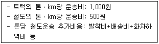
- 50,000원
- 100,000원
- 150,000원
- 200,000원
- 250,000원
(정답률: 50%)
45. Charter Party B/L에 관한 설명으로 옳지 않은 것은?
- 정기용선계약에서 발행된 선하증권을 말하며, 대표적인 표준양식은 NYPE이다.
- 제3자에게 양도된 경우 용선계약서의 내용보다 선하증권의 내용이 우선한다.
- 이면에는 용선계약서의 모든 내용이 편입된다는 문언이 포함되어 있다.
- 약식(short form)으로 발행된다.
- 신용장통일규칙(UCP 600)은 신용장에서 별도의 약정이 없는 한, 이 선하증권은 수리하지 않는다고 규정하고 있다.
(정답률: 알수없음)
46. 다음 중 중량화물이나 장척화물 운송에 적합하도록 천장이나 측면이 개방된 컨테이너를 모두 고른 것은?
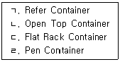
- ㄱ, ㄴ
- ㄱ, ㄷ
- ㄴ, ㄷ
- ㄴ, ㄹ
- ㄷ, ㄹ
(정답률: 70%)
47. 해상운임의 부대비용 중 Detention Charge에 해당하는 것은?
- 북미수출의 경우, 도착항에서 하역 및 터미널 작업비용을 해상운임과는 별도로 징수하는 것으로서 TEU당 부과하고 있다.
- 적하 또는 양하일수가 약정된 정박기간을 초과하는 경우, 초과일수에 대하여 용선자가 선주에게 지불하는 것으로 1일 또는 1톤당으로 지불하는 금액이다.
- 화주가 무료사용 허용기간(Free Time)을 초과하여 컨테이너를 반환하지 않은 경우, 선박회사에게 지불하는 비용이다.
- 화물이 CY에 입고된 순간부터 선측까지, 반대로 본선의 선측에서 CY의 게이트를 통과하기까지 화물의 이동에 따르는 비용을 말한다.
- LCL 화물 운송시에 선적지 및 도착지의 CFS에서 화물의 혼재 또는 분류작업을 할 때 발생하는 비용이다.
(정답률: 알수없음)
48. 항공운임에 관한 설명으로 옳지 않은 것은?
- 일반화물요율(GCR)은 최저운임, 기본요율, 중량단계별 할증요율로 구성된다.
- 특정품목할인요율(SCR)은 주로 해상운송화물을 항공운송으로 유치하기 위해 설정된 요율이다.
- 종가운임(Valuation Charge)은 항공화물운송장에 화물의 실제가격이 기재된 경우에 부과된다.
- 종가운임이 부과되면 항공운송인의 책임제한이 적용되지 않고, 화주는 항공화물운송장에 기재된 가격 전액을 배상받을 수 있다.
- 단위탑재용기운임(BUC)은 파렛트 또는 컨테이너 단위로 부과된다.
(정답률: 40%)
49. 선하증권에 기재된 특정 수하인이 아니면 원칙적으로 화물을 수령할 수 없는 기명식 선하증권은?
- Shipped B/L
- Received B/L
- Straight B/L
- Order B/L
- Third Party B/L
(정답률: 알수없음)
50. 항해용선계약에 관한 대표적 표준서식인 GENCON(1994)을 기준으로 한 다음 설명 중 옳은 것을 모두 고른 것은?
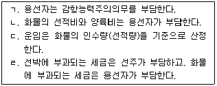
- ㄱ, ㄴ
- ㄱ, ㄴ, ㄷ
- ㄱ, ㄷ, ㄹ
- ㄴ, ㄷ, ㄹ
- ㄷ, ㄹ
(정답률: 알수없음)
51. 항공화물운송장의 기능에 관한 설명으로 옳지 않은 것은?
- 운송계약의 증거 서류이다.
- 유통가능한 유가증권이다.
- 운송물품에 대한 수령증이다.
- 운임 및 요금의 청구서이다.
- 수출입신고서 및 통관자료이다.
(정답률: 알수없음)
52. 항공운송에 관한 설명으로 옳은 것을 모두 고른 것은?
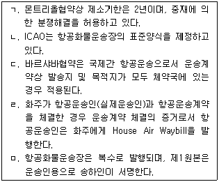
- ㄱ, ㄴ, ㄷ
- ㄱ, ㄷ, ㄹ
- ㄱ, ㄷ, ㅁ
- ㄴ, ㄹ, ㅁ
- ㄷ, ㄹ, ㅁ
(정답률: 20%)
53. 다음은 수출 FCL화물의 해상운송업무에 수반되는 문서의 일부분이다. 작성되는 순서대로 옳게 나열한 것은?
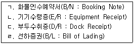
- ㄱ-ㄴ-ㄷ-ㄹ
- ㄱ-ㄷ-ㄴ-ㄹ
- ㄷ-ㄱ-ㄹ-ㄴ
- ㄹ-ㄱ-ㄴ-ㄷ
- ㄹ-ㄱ-ㄷ-ㄴ
(정답률: 알수없음)
54. 컨테이너 화물의 운송형태에 관한 설명으로 옳지 않은 것은?
- CY/CY 운송은 수출자의 공장에서 컨테이너를 만재한 상태에서 수입자의 창고까지 운송하는 형태를 말하며, Door-to-Door 운송이라고도 한다.
- CFS/CFS 운송은 주로 다수의 수출자와 다수의 수입자 간에 이용된다.
- CY/CFS 운송은 하나의 수출자가 둘 이상의 수입자의 화물을 한 컨테이너에 적입한 경우에 이용된다.
- CFS/CY 운송은 수입업자가 여러 송하인으로부터 물품을 수입할 때 주로 이용된다.
- CFS/CFS 운송은 Pier-to-Door 운송 또는 Seller's Consolidation이라고도 한다.
(정답률: 82%)
55. 선박의 측면 또는 선미에 설치된 램프를 이용하여 트레일러에 의해 컨테이너를 싣고 내리는 하역방식은?
- Lo-Lo(Lift on/Lift off)방식
- Fo-Fo(Float on/Float off)방식
- Ro-Ro(Roll on/Roll off)방식
- Semi-Container방식
- Full-Container방식
(정답률: 42%)
56. 선박의 구조에 관한 설명으로 옳지 않은 것은?
- 발라스트(ballast)는 공선항해시 감항성을 유지하기 위해 선박에 싣는 해수 등의 짐을 말한다.
- 전장(LOA)이란 선체에 고정적으로 붙어 있는 모든 돌출물을 포함한 뱃머리 끝에서부터 배꼬리 끝까지의 수평거리를 말한다.
- 데릭(derrick)은 선박에 설치된 기중기를 말한다.
- 건현(free board)이란 선박이 운항 중에 물에 잠기는 부분을 말하며, 흘수선(draft)과 연결하면 선박의 깊이를 나타낸다.
- 선체(hull)란 선박의 주요 부분 및 상부에 있는 구조물을 총칭하며, 인체의 등뼈인 용골과 갈비뼈인 늑골, 선창내부를 수직으로 분리해 주는 격벽 등으로 이루어진다.
(정답률: 알수없음)
57. 정기선운임에 관한 설명으로 옳지 않은 것은?
- 하역비는 선주가 부담하는 Berth Term을 원칙으로 한다.
- Diversion Charge는 양륙항변경료를 말한다.
- CAF는 유류할증료를 말한다.
- 화물의 용적이나 중량이 일정기준 이하일 경우 최저운임(minimum rate)이 적용된다.
- Freight Collect는 FOB조건의 매매계약에서 사용된다.
(정답률: 70%)
58. 프레이트 포워더(Freight Forwarder)에 관한 설명으로 옳지 않은 것은?
- 화물의 집화, 분배, 혼재업무 등을 수행한다.
- 복합운송증권을 발행할 수 있다.
- 운송 주체로서의 역할과 기능을 수행할 수 있다.
- 직접 운송수단을 보유하지 않은 채 화주를 대신하여 화물운송을 주선하기도 한다.
- 화주를 대신하여 적하보험 수배와 관련된 업무를 수행할 수 없다.
(정답률: 알수없음)
59. 국제 복합운송(Multimodal Transport)의 요건으로 옳지 않은 것은?
- 단일책임 원칙
- 단일운송 수단
- 단일운임 적용
- 단일계약 체결
- 단일증권 발행
(정답률: 80%)
60. 컨테이너 운송에서 TOFC에 관한 설명으로 옳은 것을 모두 고른 것은?
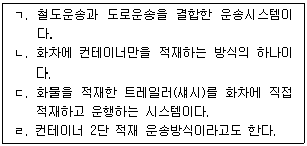
- ㄱ, ㄴ
- ㄱ, ㄷ
- ㄱ, ㄹ
- ㄴ, ㄷ
- ㄴ, ㄹ
(정답률: 55%)
61. 택배 표준약관(공정거래위원회 표준약관 제 10026호)상의 용어에 관한 설명으로 옳은 것은?
- “운송장”이라 함은 사업자와 고객 간의 택배계약의 성립과 내용을 증명하기 위하여 고객의 청구에 의하여 사업자가 발행한 문서이다.
- “고객”이라 함은 택배사업자에게 택배를 위탁하는 자로서 운송장에 수하인으로 기재되는 자를 말한다.
- “택배”라 함은 소형ㆍ소량의 운송물을 고객의 주택, 사무실에서 수탁하여 수하인의 주택, 사무실까지 운송하여 인수하는 것을 말한다.
- “수탁”이라 함은 사업자가 택배를 위하여 고객으로부터 운송물을 수령하는 것을 말한다.
- “손해배상한도액”은 고객이 운송장에 운송물의 가액을 기재한 경우에만 적용된다.
(정답률: 24%)
62. NVOCC에 관한 설명으로 옳은 것을 모두 고른 것은?
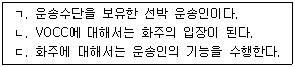
- ㄱ
- ㄴ
- ㄱ, ㄴ
- ㄱ, ㄷ
- ㄴ, ㄷ
(정답률: 알수없음)
63. 랜드브리지(Land Bridge)에 관한 설명으로 옳지 않은 것은?
- 대륙과 대륙을 연결하는 데 있어서 항공운송이 교량(Bridge) 역할을 하는 운송시스템이다.
- 운송시간의 단축 또는 운송비의 절감이 주요 목표이다.
- SLB는 TSR을 이용하는 운송시스템이다.
- ALB는 수에즈 운하가 봉쇄될 경우, 이용할 수 있는 운송시스템 중의 하나이다.
- TCR은 중국 연운항을 기점으로 하는 대륙횡단철도이다.
(정답률: 80%)
64. 다음 그림과 같이 A, B, C, D, E의 5개 도시에 석유제품을 공급하기 위한 파이프라인을 건설하려고 한다. 소요되는 최소의 파이프라인 길이는 얼마인가? [단, 각 아크(Arc)상의 숫자는 거리(km)를 나타낸다.]
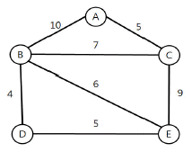
- 15 km
- 18 km
- 21 km
- 23 km
- 28 km
(정답률: 알수없음)
65. 파렛트 풀 시스템(PPS : Pallet Pool System)에 관한 설명으로 옳지 않은 것은?
- 파렛트 공동 사용을 통해 물류의 효율성을 높일 수 있다.
- 상품 규격과 파렛트 규격의 불일치가 존재할 수 있다.
- 포장비 절감이나 작업능률 향상의 경제적 효과가 있다.
- 계절적인 변동이 심한 제품의 경우 PPS 도입 효과가 크다.
- 파렛트 풀 시스템의 운영방식 중 개별 기업이 파렛트를 보유하지 않고 특정회사의 파렛트를 임대하여 사용하는 방식은 교환방식이다.
(정답률: 알수없음)
66. 수배송시스템을 합리화하기 위한 하드웨어적 대책으로 옳은 것을 고른 것은?
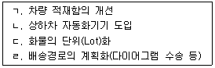
- ㄱ, ㄴ
- ㄱ, ㄷ
- ㄴ, ㄷ
- ㄴ, ㄹ
- ㄷ, ㄹ
(정답률: 60%)
67. 공동수배송에 관한 설명으로 옳지 않은 것은?
- 혼재(Consolidation)배송은 차량의 적재율을 기준으로 배송하는 형태이다.
- 루트(Route)배송은 광범위한 지역에 소량화물을 요구하는 고객을 대상으로 할 때 유리하다.
- 납품대행방식은 일반적으로 백화점, 할인점 등에서의 공동화 유형이다.
- 노선집하공동방식은 각 노선사업자가 집화해 온 노선화물의 집화부분을 공동화하는 방식이다.
- 배송공동방식은 공장에서 물류센터까지 공동수송하고, 물류센터에서 고객까지 공동배송하는 방식이다.
(정답률: 64%)
68. 공동수배송을 실시하여 얻을 수 있는 기대효과와 관련이 적은 것은?
- 수송효율 제고
- 물류비용 절감
- 교통혼잡 완화
- 교차배송 증가
- 환경오염 방지
(정답률: 55%)
69. 물류시설에 관한 설명으로 옳지 않은 것은?
- ICD란 수출입컨테이너를 취급하는 내륙컨테이너기지로서 통관, 보관, 하역 등 항만 터미널과 유사한 기능을 수행하는 물류거점이다.
- 물류창고란 화물의 저장ㆍ관리, 집화ㆍ배송 및 수급조정 등을 위한 보관시설ㆍ보관장소 또는 이와 관련된 하역ㆍ분류ㆍ포장ㆍ상표부착 등에 필요한 기능을 갖춘 시설이다.
- 공동집배송센터란 창고, 화물터미널, 항만 등의 제반시설을 한 곳에 집중하여 물류활동의 합리화를 도모하는 복합시설이다.
- 물류터미널이란 화물의 집화ㆍ하역 및 이와 관련된 분류ㆍ포장ㆍ보관ㆍ가공ㆍ조립 또는 통관 등에 필요한 기능을 갖춘 시설물이다.
- 물류단지란 물류단지시설과 지원시설을 집단적으로 설치ㆍ육성하기 위하여 지정ㆍ개발하는 일단의 토지이다.
(정답률: 알수없음)
70. 우리나라 운송시스템의 합리화에 관한 설명으로 옳지 않은 것은?
- 합리화된 운송시스템은 재고관리비와 운송비의 Trade-off 측면을 주로 고려하여 설계한다.
- 화물 트럭의 회전율을 높일 수 있도록 상하차 소요 시간을 감소시킨다.
- 수송과 배송을 연계하여 물류센터의 재고를 줄인다.
- 거리 구분에 관계없이 자가차량을 중심으로 운영한다.
- 물류 특성에 맞게 배송차량을 선택하여 효율성을 높인다.
(정답률: 60%)
71. 우리나라 운송부문 합리화 방안 중 옳지 않은 것은?
- 도로 중심으로 이루어지는 운송을 철도와 연안운송으로 전환한다.
- 동일지역의 동종업종을 대상으로 화주들의 공동수배송을 유도한다.
- 운송업체간 제휴나 M&A를 통하여 운송업체의 대형화를 유도한다.
- 대형 화주기업들을 중심으로 자가 수송체계 구축을 유도한다.
- 수도권과 주요 항만을 연결하는 컨테이너 정기 직행열차(Block Train)를 운행한다.
(정답률: 85%)
72. 배송경로 및 일정계획을 효과적으로 수립하기 위하여 고려해야 하는 사항으로 옳지 않은 것은?
- 배송날짜가 다른 경우에는 경유지를 구분한다.
- 운행경로는 배송센터에서 가장 가까운 지역부터 만들어 간다.
- 픽업과 배송은 한꺼번에 이루어지게 한다.
- 효율적인 경로는 이용할 수 있는 대형 차량을 우선적으로 사용하여 만들 수 있다.
- 차량경로상의 운행순서는 경로가 교차하지 않도록 만들어 간다.
(정답률: 알수없음)
73. 아래와 같은 운송조건하에서 최소비용법(Least-cost Method)에 의한 최초 가능해의 총운송비용은 얼마인가? (단, 톤당 비용은 수요지와 공급지간 단위운송비용이다.)
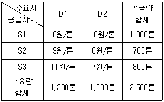
- 13,400원
- 14,700원
- 15,400원
- 16,700원
- 17,400원
(정답률: 54%)
74. 공장에서 물류센터까지 연간 7,000,000개의 제품을 운송하려고 한다. 다음 세 가지 수송수단 중 '수송 중 재고비용'이 가장 저렴한 순서대로 나열한 것은? (단, 제품당 가격은 7,000원이며, 연간 재고유지비용은 제품가격의 20%이다.)
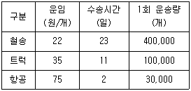
- 철송-트럭-항공
- 철송-항공-트럭
- 트럭-철송-항공
- 트럭-항공-철송
- 항공-트럭-철송
(정답률: 알수없음)
75. 다음 중 공로운송에서 공동수배송을 수행하기 위한 바람직한 조건이 아닌 것은?
- 지역내 공동수배송에 참여할 수 있는 복수 기업이 존재해야 한다.
- 공동수배송에 대한 참여 기업들의 이해가 일치해야 한다.
- 공동수배송을 주도하는 중심업체가 있어야 한다.
- 동일 품목에 한정하여 공동수배송이 이루어져야 한다.
- 대상화물의 공동배송 조건이 유사해야 한다.
(정답률: 64%)
76. 다음과 같은 공동수배송 시스템의 운영방식은?
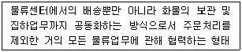
- 집배공동형
- 배송공동형
- 납품대행형
- 공동수주ㆍ공동배송형
- 노선집하공동형
(정답률: 알수없음)
77. 네트워크 문제와 관련된 설명으로 옳지 않은 것은?
- 네트워크는 공간적, 지리적 위치나 시간적 상태를 나타내는 노드(node)와 이를 연결하는 링크(link) 또는 아크(arc)에 의해 표현된다.
- 최단경로 문제는 비용, 거리, 시간의 관점에서 최단경로를 찾는 문제로서 외판원의 경로선택 문제 등이 이에 해당한다.
- 최소걸침나무 문제는 네트워크상의 모든 마디를 가장 적은 비용 또는 짧은 시간으로 연결하는 방법을 찾는 문제이다.
- 최대흐름 문제는 네트워크상의 한 지점에서 다른 지점으로 보낼 수 있는 최대 유량을 찾는 문제이다.
- 네트워크 문제를 해결하는 대표적인 기법은 선형계획법이다.
(정답률: 39%)
78. 녹색물류(Green Logistics)에 관한 설명으로 옳지 않은 것은?
- 미국은 교토의정서에 따른 의무감축국으로서 EU보다 더 적극적으로 탄소배출량을 줄이고 있다.
- 일본은 '종합물류시책대강'을 수립하고, 물류활동에서 발생하는 탄소량을 줄이기 위해 노력하고 있다.
- 우리나라는 교토의정서를 비준하였으며, 탄소배출량을 줄이기 위하여 물류정책기본법에 녹색물류인증제도 도입을 규정하고 있다.
- '배출권 거래제도(Emission Trading System)'는 교토의정서의 온실가스 감축의무 이행에 신축성을 부여하기 위해 도입된 제도이다.
- 녹색물류는 수송, 보관, 포장, 하역, 회수 등전 부문에 있어서 물류활동을 친환경적으로 개선하는 것이다.
(정답률: 47%)
79. 다음과 같은 수송표가 주어졌을 때 북서코너법(North-West Corner Method)으로 초기해를 구하고, 디딤돌법(Stepping Stone Method)에 의해 초기해를 개선할 여지가 있는지 검토하려고 한다. 초기해에서 수송경로 (나, 1)에 할당할 수 있는 최대할당량은? (단, 괄호는 단위당 수송비용이다.)
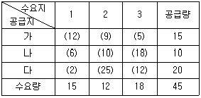
- 8
- 10
- 12
- 15
- 17
(정답률: 알수없음)
80. 우리나라 국가산업단지의 화물발생량(톤/일)을 분석하여 아래와 같은 회귀식이 도출되었다. 어느 국가산업단지의 고용자수와 매출액이 각각 3,000명과 5,000억원으로 추정될 경우, 화물발생량은?
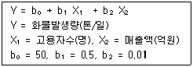
- 1,200 톤/일
- 1,300톤/일
- 1,400톤/일
- 1,500 톤/일
- 1,600톤/일
(정답률: 알수없음)
3과목: 국제물류론
81. 국제물류의 활동 중 상품의 수급조절기능, 수송조절기능, 물류거점기능 등의 역할을 수행하는 것은?
- 보관
- 운송
- 포장
- 하역
- 글로벌 소싱
(정답률: 알수없음)
82. UN 국제물품복합운송조약(1980)의 일부 내용이다. 다음 괄호 안에 들어갈 용어로 옳은 것은?
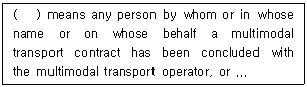
- Consignee
- Consignor
- Carrier
- Actual Carrier
- Ship Broker
(정답률: 알수없음)
83. 상품이 생산국 창고에서 출하되어 특정 경제권 내 물류거점 국가에 설치된 중앙창고로 수송된 다음 각국의 자회사 창고나 고객 또는 유통경로의 다음 단계로 수송되는 국제물류시스템은?
- Direct System
- Transit System
- Multi-country Warehouse System
- Point to Point System
- Classical System
(정답률: 50%)
84. 해상운송과 연계하여 육상운송을 할 때 해상보험에 의한 담보의 구간을 내륙지점까지 확장 담보하는 약관은?
- ISE
- COOC
- RFWD
- ITE
- TPND
(정답률: 50%)
85. 국제특송(국제소화물일관운송)에 관한 설명으로 옳지 않은 것은?
- 소형ㆍ경량물품을 문전에서 문전까지 신속하게 수취ㆍ배달하여 주는 서비스이다.
- 쿠리어(courier) 서비스 라고도 한다.
- 운송업자는 모든 운송구간에 대하여 일관책임을 진다.
- 대표적인 글로벌 업체로는 DHL, FedEx, UPS 등이 있다.
- 우리나라는 항공법에서 국제특송업을 등록업종으로 규정하고 있다.
(정답률: 알수없음)
86. 항만의 계류시설 중 선박을 계선밧줄로 고정하기 위하여 안벽에 설치된 석재 또는 강철재의 짧은 기둥은?
- 비트(Bitt)
- 펜더(Fender)
- 캡스탄(Capstan)
- 돌핀(Dolphin)
- 안벽(Berth)
(정답률: 70%)
87. 선급제도에 관한 설명으로 옳지 않은 것은?
- 선박의 감항성에 대한 객관적ㆍ전문적 판단을 위해서 생겼다.
- 보험의 인수여부 및 보험료 결정을 위해 1760년 'Green Book'이라는 선박등록부를 만들면서 시작되었다.
- 1968년 국제선급협회(IACS)가 창설되었으며 우리나라는 정회원으로 가입되어 있다.
- 우리나라는 독자적인 선급제도의 필요성에 의해 한국선급협회를 창설하였다.
- 선급을 계속 유지하기 위해서는 매년 일반검사를 받고 5년 마다 정밀검사를 받아야 한다.
(정답률: 28%)
88. 용선의 형태 중 'Bareboat Charter'와 관련이 있는 것은?
- Demise Charter
- Time Charter
- Partial Charter
- Daily Charter
- Lump sum Charter
(정답률: 39%)
89. IATA의 Dangerous Goods Regulations(DGR)에서 규정하고 있는 위험품목이 아닌 것은?
- Flammable Gases(발화성 가스)
- Oxidizing Substances(산화성 물질)
- Corrosives(부식성 물질)
- Perishable Cargo(부패성 화물)
- Radioactive Materials(방사성 물질)
(정답률: 55%)
90. 해사안전 및 오염방지 대책, 국제해사 관련 협약의 시행 및 권고 등을 위해 설립된 UN 산하의 국제기구는?
- CMI
- IMO
- ICS
- ISF
- ISO
(정답률: 82%)
91. 1992년 UNCTAD/ICC 복합운송증권에 관한 국제규칙에서 채택하고 있는 복합운송인의 책임원칙과 체계로 옳은 것은?
- 과실책임원칙과 단일책임체계
- 과실추정책임원칙과 단일책임체계
- 과실추정책임원칙과 변형단일책임체계
- 무과실책임원칙과 변형단일책임체계
- 절대책임원칙과 이종책임체계
(정답률: 알수없음)
92. 미국의 1998년 개정해운법(The Ocean Shipping Reform Act of 1998)에 관한 설명으로 옳은 것은?
- 개정법은 동맹에 대한 독점금지법의 면제를 인정하지 않는다.
- 서비스 계약시 개별선사에게 비밀계약을 허용한다.
- 태리프(Tariff)는 연방해사위원회(FMC)에 신고하여야 한다.
- 선사그룹(Carrier Group)이 내륙운송업자와 운임률 및 서비스를 공동으로 협상할 수 없다.
- 무선박운송인(NVOCC)은 연방해사위원회(FMC)로부터 면허를 받지 않아도 된다.
(정답률: 40%)
93. 국제항공운송조약별 책임한도액에 관한 설명으로 옳지 않은 것은?
- 바르샤바 조약 : 여객 1인당 US$ 10,000
- 헤이그 의정서 : 위탁수화물 1 kg당 US$ 20.00
- 몬트리올 협정 : 휴대수화물 1인당 US$ 400.00
- 바르샤바 조약 : 화물 1 kg당 US$ 20.00
- 헤이그 의정서 : 여객 1인당 US$ 75,000
(정답률: 알수없음)
94. 다음 괄호안에 들어갈 용어로 옳은 것은?
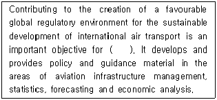
- ICAO
- WTO
- ITF
- IMO
- ICC
(정답률: 37%)
95. 국제항공업무통과협정에서 인정하고 있는 하늘의 자유(Freedoms of the Air)에 관한 설명으로 옳지 않은 것은?
- 제1의 자유는 영공통과의 자유(Fly-over Right)이다.
- 제2의 자유는 기술착륙의 자유(Technical Landing Right)이다.
- 제3의 자유는 자국의 영역 내에서 실은 여객과 화물을 타 체약국으로 운송할 수 있는 자유(Set-down Right)이다.
- 제4의 자유는 타 체약국의 영역 내에서 여객과 화물을 탑승하고 자국으로 운송할 수 있는 자유(Bring-back Right)이다.
- 제5의 자유는 자국의 영역 내에서 타 체약국의 항공사가 운송할 수 있는 자유(Stand Alone Cabotage Right)이다.
(정답률: 알수없음)
96. 국제항공운송협회(IATA)에 관한 설명으로 옳지 않은 것은?
- IATA는 국제항공사간의 협력을 강화할 목적으로 설립된 UN 산하의 국제기구이다.
- IATA는 약관을 포함한 항공권의 규격 및 발권 절차의 통일을 추구하고 있다.
- IATA는 ICAO와 연대 협력한다.
- IATA는 항공운송업계의 바람직한 경쟁을 목표로 한다.
- IATA는 출입국절차의 간소화를 위해 노력하고 있다.
(정답률: 82%)
97. 선박의 국적에 관한 설명으로 옳지 않은 것은?
- 외항선박은 국적을 취득해야 한다.
- 그리스 국적의 선주가 실질적으로 소유하고 있는 선박을 파나마에 등록하면 이 선박은 편의치적선에 해당된다.
- 편의치적은 오늘날 경제적인 목적이 아니라 정치적, 군사적 목적에서 실행되고 있는 것으로 평가된다.
- 편의치적은 해운기업의 비용절감에 기여했다.
- 전통적인 해운국의 입장에서 편의치적의 확산을 방지할 필요가 있어 제2선적제도가 고안되었다.
(정답률: 60%)
98. 선박의 순톤수에 관한 설명으로 옳은 것은?
- 선박 내부의 폐쇄된 공간의 총 용적을 의미한다.
- 선박 내부의 폐쇄된 공간 중 직접 상행위에 사용되는 장소의 용적을 의미한다.
- 선박이 적재할 수 있는 화물의 최대 중량을 의미한다.
- 선박마다 톤수를 표현하는 기준이 달라 한가지로 통합하여 선박 건조원가의 기준으로 활용하는 톤수이다.
- 경화상태에 있어서의 배수량을 배수톤으로 표시한 것으로 군함 등에서 주로 쓰인다.
(정답률: 알수없음)
99. 운송인의 책임에 관한 설명으로 옳지 않은 것은?
- Hague Rules(1924)는 운송인의 의무 및 책임의 최소한을 규정하고 있다.
- Hague Rules(1924)는 운송인과 화주 간의 위험배분에 관해 이해의 조정을 도모하지 않았다.
- Hamburg Rules(1978)가 제정된 배경은 종래의 관련 규칙이 선박을 소유한 선진국 선주에게 유리하고, 개도국 화주에게 불리하다는 주장과 관련이 있다.
- Hague-Visby Rules(1968)는 그 자체가 독립된 새로운 협약이 아니라 Hague Rules(1924)를 개정하기 위한 것이었다.
- Hague Rules(1924)는 운송인의 기본적인 의무로서 선박의 감항능력에 관한 주의의무를 규정하고 있다.
(정답률: 46%)
100. 정기선 해운에 관한 설명으로 옳은 것은?
- 용선료가 부과된다.
- 원유, 철광석 등 대량 화물을 운송한다.
- 선박의 운항 패턴이 규칙적이다.
- 용선계약서가 작성된다.
- 수요와 공급에 의해 수시로 운임이 결정된다.
(정답률: 80%)
101. 국제복합운송에 관한 설명으로 옳지 않은 것은?
- 복합운송인은 물품의 수령에서 인도까지 모든 운송구간에 대해 책임을 진다.
- 2가지 종류 이상의 운송수단을 사용한다.
- 모든 운송구간에 대해 일괄운임이 적용된다.
- 복합운송인은 각 운송수단별로 운송서류를 발행한다.
- 복합운송인은 자신이 직접 운송수단을 보유하여 운송서비스를 제공하기도 한다.
(정답률: 55%)
102. 컨테이너 터미널에 관한 설명으로 옳지 않은 것은?
- CFS는 FCL Cargo를 인수, 인도, 보관하는 장소이다.
- Apron은 컨테이너의 선적 및 양륙을 위하여 선측에 Gantry Crane이 설치되어 있는 장소이다.
- Marshalling Yard는 바로 선적해야 할 컨테이너를 하역 순서대로 정렬하여 두거나 양륙된 컨테이너를 배치해 놓은 장소이다.
- Berth는 선박을 계류시키는 설비가 설치되어 있는 선박의 접안장소이다.
- On-dock CY는 컨테이너의 인수, 인도, 보관을 위해 항만내에 있는 장소이다.
(정답률: 50%)
103. 로테르담 규칙(2008)에 관한 설명으로 옳지 않은 것은?
- 항해과실 면책조항이 없다.
- 손해발생구간이 밝혀지지 않은 화물손해는 해상운송에서 발생한 것으로 간주한다.
- 화주에게 화물의 감항성 의무를 부과했다.
- 정해진 인도 일자를 지나 화물을 인도하면 그 화물운임의 2.5배 내에서 손해를 배상해야 한다.
- UNCTAD의 주도로 채택된 국제화물운송협약이다.
(정답률: 알수없음)
104. 해상화물운송장(Sea Waybill)에 관한 설명으로 옳지 않은 것은?
- 원본서류의 제시 없이도 물품의 인수가 가능하다.
- 수입화물선취보증제도를 이용하지 않아도 된다.
- 유통성이 없다.
- 항해 중 물품의 전매가 가능하다.
- 권리증권이 아니다.
(정답률: 알수없음)
1⑤. 선하증권의 종류별 특성에 관한 설명으로 옳지 않은 것은?
- Stale B/L : 선적 후 일정기간 내에 은행에 선하증권이 제시되어야 하는데, 그 기간이 경과된 선하증권
- Shipped B/L : 화물이 실제로 특정선박에 적재 되었다는 내용이 기재된 것으로 선적 후 발행되는 선하증권
- House B/L : 화물의 혼재를 주선한 포워더가 선사로부터 발급받는 선하증권
- Foul B/L : 선적 당시 화물의 포장이나 수량 등에 결함 또는 이상이 있어 그 사실이 선하증권에 그대로 기재되어 발행된 선하증권
- Straight B/L : 선하증권의 수하인란에 수하인의 상호 및 주소가 기재된 선하증권
(정답률: 알수없음)
106. 극동아시아에서 미국 태평양 연안까지 해상운송하고, 태평양 연안의 항구로부터 미국동안까지 철도운송하는 방식은?
- America Land Bridge
- Interior Point Intermodal
- Reversed Interior Point Intermodal
- Micro-land Bridge
- Mini Land Bridge
(정답률: 알수없음)
107. 화주가 선박회사에게 발행하는 서류로서 선적된 화물에 후일 문제가 발생하더라도 선박회사에게 책임을 전가시키지 않는다는 취지의 각서는?
- Letter of Guarantee
- Letter of Indemnity
- Shipping Request
- Shipping Order
- Delivery Order
(정답률: 37%)
108. 일반적인 선적절차에 따라 발급되는 서류를 순서대로 올바르게 나열한 것은?
- Shipping Request → Booking Note → Shipping Order → Bill of Lading → Mate's Receipt
- Shipping Order → Shipping Request → Booking Note → Mate's Receipt → Bill of Lading
- Shipping Request → Booking Note → Mate's Receipt → Shipping Order → Bill of Lading
- Shipping Request → Booking Note → Shipping Order → Mate's Receipt → Bill of Lading
- Shipping Request → Booking Note → Mate's Receipt → Bill of Lading → Shipping Order
(정답률: 알수없음)
109. 항해용선계약의 주요 내용에 관한 설명으로 옳지 않은 것은?
- FI(Free In)는 선적시에는 용선자, 양륙시에는 선주가 선내하역인부의 임금(Stevedorage)을 부담하는 조건이다.
- Running Laydays는 기상조건이 하역가능한 상태의 일수 만을 정박기간에 산입하는 것으로 현재 가장 많이 택하고 있는 조건이다.
- Demurrage는 계약상 정박일수를 초과할 때 용선자가 선주에게 지급하기로 약정한 금액이다.
- Despatch Money는 계약상 허용된 정박기간이 종료되기 전에 하역이 완료되었을 경우 단축된 기간에 대하여 선주가 용선자에게 지급하기로 약정한 금액이다.
- Lien Clause는 운송계약에 있어서 화주인 용선자가 운임 및 기타 부대경비를 지급하지 아니할 때 선주는 그 화물을 유치할 수 있는 권한이 있다는 조항이다.
(정답률: 알수없음)
110. 다음 ( ㄱ ), ( ㄴ )에 해당하는 것은?
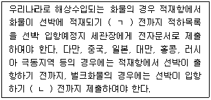
- ㄱ: 4시간, ㄴ: 1시간
- ㄱ: 12시간, ㄴ: 2시간
- ㄱ: 12시간, ㄴ: 4시간
- ㄱ: 24시간, ㄴ: 2시간
- ㄱ: 24시간, ㄴ: 4시간
(정답률: 24%)
111. 국제물류에서 활용되고 있는 RFID(Radio Frequency Identification)에 관한 설명으로 옳지 않은 것은?
- RFID는 EOS(Electronic Ordering System)에서 현재 가장 보편적으로 이용되고 있다.
- RFID는 기존의 무선인식시스템 보다 많은 양의 데이터 저장이 가능하다.
- RFID 기술은 전파를 매개로 하는 초소형 칩과 안테나를 사물에 태그형태로 부착한다.
- RFID의 도입을 통해 화물의 위치를 추적할 수 있다.
- RFID는 유통업체 및 제조업체의 재고파악 능력을 향상시킨다.
(정답률: 60%)
112. 한번에 적재할 항공화물이 총 25상자이고, 총 중량은 450 kg이다. 각 상자의 크기가 가로 60 cm, 세로 40 cm, 높이 50 cm일 때 운임 산출중량(Chargeable Weight)은? (단, 운임부과 중량 환산기준은 6,000 cm3 = 1 kg)
- 400 kg
- 450 kg
- 500 kg
- 550 kg
- 600 kg
(정답률: 50%)
113. 해상운임에 관한 설명으로 옳지 않은 것은?
- Heavy Lift Surcharge는 화물 한 단위가 일정한 중량을 초과할 때 기본운임에 할증하여 부과하는 운임이다.
- Freight All Kinds Rate는 컨테이너에 적입된 화물의 가액, 성질 등에 관계없이 부과하는 컨테이너당 운임이다.
- Dead Freight는 실제 적재량을 계약한 화물량 만큼 채우지 못할 경우 사용하지 않은 부분에 대하여 부과하는 운임이다.
- Pro rata Freight는 선박이 항해 중 불가항력 등의 이유로 항해를 계속할 수 없을 때 중도에서 화물을 화주에게 인도하고 선주는 운송한 거리의 비율에 따라 부과하는 운임이다.
- Optional Surcharge는 선적 시에 지정했던 항구를 선적 후에 변동하고자 할 때 추가로 부과하는 운임이다.
(정답률: 알수없음)
114. 항공화물운임에 관한 설명으로 옳지 않은 것은?
- 요율의 적용시점은 항공화물운송장 발행일로 한다.
- 항공화물의 요율은 공항에서 공항까지의 운송 구간만을 대상으로 한다.
- 운임의 기준통화는 도착지 국가의 현지통화로 설정되는 것이 원칙이나 많은 국가에서 미국달러로 요율을 설정하고 있다.
- 미국출발 화물의 중량요율(Weight Rate)은 lb(파운드)당 요율로 표시할 수 있다.
- 운임산출에 적용한 경로대로 수송하지 않아도 운임의 변동은 없다.
(정답률: 60%)
115. 1978년 UN 해상물품운송조약의 일부 내용이다. 괄호 안에 들어갈 용어로 옳은 것은?
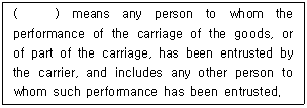
- Carrier
- Actual Carrier
- Shipper
- Consignee
- Notify Party
(정답률: 30%)
116. 해상보험에 있어서 서로 관련이 없는 것은?
- 공동해손(General Average)과 요크-앤트워프규칙(York-Antwerp Rules)
- 포괄예정보험(Open Cover)과 보험증명서(Certificate of Insurance)
- 보험중개인(Insurance Broker)과 부보각서(Cover Note)
- 위부(Abandonment)와 단독해손(Particular Average)
- 전위험 담보조건(All Risks)과 ICC(A)
(정답률: 50%)
117. ICC(A) 조건하에서 추가적으로 특약하면 보험회사로부터 보상받을 수 있는 손해는?
- 지연을 근인으로 하여 발생한 손해
- 동맹파업으로 인한 손해
- 통상의 누손, 중량 또는 용적의 통상적인 감소
- 포장 또는 준비의 불완전 또는 부적합에 의한 손해
- 피보험자의 고의적인 불법행위에 의한 손해
(정답률: 40%)
118. 화물에 손해가 발생하거나 또는 손해발생의 염려가 있을 때, 보험자가 보상하게 될 손해를 방지 또는 경감하기 위하여 피보험자, 사용인 또는 대리인이 정당하고 합리적으로 지출하는 비용은?
- Particular Charge
- Salvage Charge
- Sue & Labour Charge
- Survey Fee
- Particular Average
(정답률: 40%)
119. 국제해상운송에 사용되는 컨테이너의 봉인(Seal)에 관한 설명으로 옳지 않은 것은?
- 화물이 적입된 컨테이너를 봉인하는 것으로 식별을 위한 기호 및 번호가 적혀 있다.
- 봉인상태에 의하여 도난, 변조 등의 부정행위의 유무를 확인할 수 있다.
- 컨테이너 봉인은 화물이 적입된 시점부터 도착지에서 화물이 적출될 때까지 장착된다.
- 컨테이너 봉인은 도착지 선박회사의 지정 컨테이너 터미널이나 내륙의 컨테이너 야드에서만 제거된다.
- 컨테이너에 부착된 봉인의 번호는 선하증권에 기재된다.
(정답률: 55%)
120. INCOTERMS® 2010의 일부 내용이다. 다음 괄호 안에 들어갈 용어로 옳은 것은?
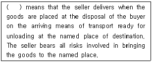
- Delivered at Place
- Delivered at Terminal
- Ex Works
- Free on Board
- Free Carrier
(정답률: 알수없음)